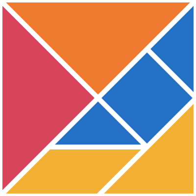
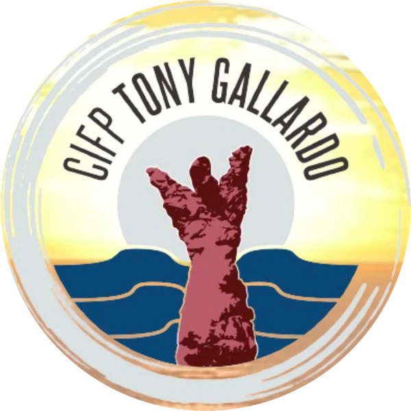
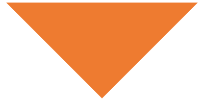
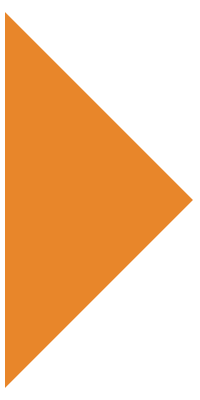
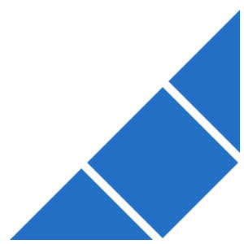
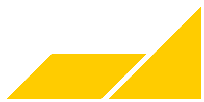
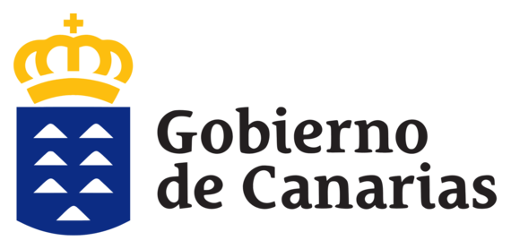

Networking 2026 Quiero participarParticipa
OrganizaCIFP Tony Gallardo
20 de noviembre de 2026
Juntos somos FP
El talento se encuentra. Las ideas se conectan.
El futuro se construye.
Siete piezas y la que falta: la tuya
Siete piezas · cuatro mesas
Para empresas
Para conocer el talento que se está formando, compartir tus retos con el profesorado y abrir colaboraciones útiles para tu empresa.
Qué gana tu empresaProyectos que ya están en marcha, como Isleta Azul, Brújula Social Azul, Radio Atlante y TG Lab, y nuevas formas de enseñar los oficios.
Con profesorado y alumnado del CIFP Tony Gallardo, otros centros de FP como el CIFP Las Indias y el CIFP Felo Monzón, PLOCAN y otras empresas.
Empresas participantesTu experiencia, un reto real o una colaboración. A cambio, visibilidad, contacto directo con el profesorado y seguimiento de cada propuesta.
Formas de participarRellena un formulario de dos minutos y te contactamos para concretar tu participación o tu propuesta de colaboración.
Quiero participarNetworking 2026 · Juntos somos FP
para compartir retos reales, descubrir proyectos innovadores y crear colaboraciones con impacto.
Siete piezas forman el cuadrado y se reparten en cuatro mesas. Abiertas, son las islas de Canarias, y la octava, La Graciosa, es la pieza que falta: la tuya.
Empresas y profesionales con el centro, el profesorado y el talento emergente.
Proyectos, nuevas metodologías, soluciones y experiencias que ya están sucediendo.
Ideas que pueden convertirse en retos compartidos, prácticas, colaboraciones y oportunidades de futuro.
Qué gana tu empresa
Ve en marcha los proyectos del centro y conoce a los futuros profesionales de tu sector.
Plantea un problema de tu empresa y trabájalo con profesorado y alumnado de FP.
Prácticas, FP Dual, proyectos conjuntos o mentorías: sal del encuentro con una línea de trabajo concreta.
Cronograma · 20 de noviembre
Pulsa un bloque para ver quién participa y de qué trata.
El éxito no es reunirnos. Es lo que construimos después.

Una necesidad compartida
Una acción en 30 días
Un contacto por cada parte
Una fecha de revisión11:15 – 11:30 · Recepción y puntos de información
Recepción de asistentes, acreditación, orientación y preparación de los equipos de trabajo.
11:30 · Apertura institucional
Presentación del propósito del networking y de la importancia de conectar la Formación Profesional con las empresas, las instituciones y las necesidades reales del territorio.
11:40 – 12:10 · Reto 01 · Identidad: lo que somos
Responsable: Agar García.
Los equipos explorarán qué representa Canarias, qué hace únicas a nuestras islas y cómo aprovechar nuestras diferencias para construir un futuro común.
12:10 · El aula como laboratorio de ideas
Interviene: Sabina Santana, jefa de Estudios del CIFP Tony Gallardo.
«Las necesidades del alumnado, del entorno y el currículo como base del diseño». Una reflexión sobre cómo conectar las necesidades del entorno con la formación, las competencias profesionales y el diseño de nuevas oportunidades.
12:10 – 12:40 · Reto 02 · De la idea a la oportunidad
Responsable: Raquel Cabrera.
Los equipos identificarán una necesidad de las empresas, la ciudadanía o el territorio y la transformarán en una posible iniciativa emprendedora. Se trabajará la colaboración entre familias profesionales y la capacidad de convertir una idea en una propuesta viable.
Experiencia relacionada: Adelina De La Jara, «Las profesiones de una Escuela Azul como eje transversal de un proyecto para la ciudadanía».
12:10 – 12:40 · Reto 03 · Profesiones que reivindican una identidad
Responsable: Juanjo García.
Un reto centrado en la sostenibilidad, los oficios tradicionales y el valor de los conocimientos vinculados al territorio.
12:40 – 13:00 · Reto 04
Participan profesionales de internacionalización e innovación del CIFP Tony Gallardo, el CIFP Las Indias —Centro Embajador Erasmus— y el CIFP Felo Monzón.
El reto invita a explorar cómo las ideas, los productos, los servicios y el talento desarrollado en Canarias pueden conectarse con otros territorios y generar oportunidades internacionales.
13:00 – 13:30 · Reto 05 · El talento que crea futuro
Participan profesionales de Información y Orientación Profesional, Emprendimiento y Calidad del CIFP Tony Gallardo, junto con representantes del Clúster Tecnológico de Canarias, el ITC y el entorno de Erasmus para Jóvenes Emprendedores.
Los equipos identificarán las competencias que necesita el tejido empresarial y cómo el alumnado de FP puede aportar valor a través de proyectos, experiencias prácticas, empleo y emprendimiento.
13:00 – 13:40 · Experiencias de impacto
Un espacio para conocer iniciativas reales, compartir aprendizajes y descubrir nuevas posibilidades de colaboración.
13:30 – 13:50 · Actividad final
Conectamos talento y oportunidades: cada equipo identificará qué puede aportar, con quién puede colaborar y qué oportunidad podría desarrollar conjuntamente. Los participantes definirán una idea o propuesta y las personas o entidades implicadas.
Formas de participar
No son categorías comerciales: son tres maneras de explicar qué puede hacer cada organización.
Empresa participante
Participa en las mesas, comparte tu experiencia y conoce al centro y a otras entidades.
Para empresas que quieren dar el primer paso.
Quiero ser participanteEmpresa colaboradora
Presenta una experiencia, participa en una actividad o ayuda a explorar un proyecto conjunto.
Para empresas que quieren implicarse activamente.
Quiero ser colaboradoraEmpresa impulsora
Contribuye a dinamizar una mesa o una iniciativa, comparte conocimiento y ayuda a activar una línea de colaboración más amplia.
Para organizaciones que quieren tener un papel protagonista.
Quiero ser impulsoraJuntos somos FP
Las organizaciones que ya forman parte de esta edición: quiénes son, a qué se dedican y por qué participan.
Estamos construyendo las conexiones de esta edición. ¿Te sumas?
Las primeras empresas aparecerán aquí con su logo, su sector y el motivo por el que participan. Falta tu pieza.
Quiero participar como empresaDespués del 20 de noviembre
Proyectos desarrollados, visitas realizadas, retos planteados y actividades conjuntas entre el centro y las empresas.
Aquí contaremos las colaboraciones que salgan de esta edición, para que el encuentro siga dando frutos durante todo el curso 2026-2027.
Quiero participar
Dos minutos. Te contactamos para concretar cómo participa tu empresa.
